Seis filhotes
Todos procurando um lar responsável, com carinho e cuidado.
Tem amor que cabe na palma da mão e transforma a casa inteira. Esses seis filhotes estão crescendo cercados de carinho e procurando suas futuras famílias.
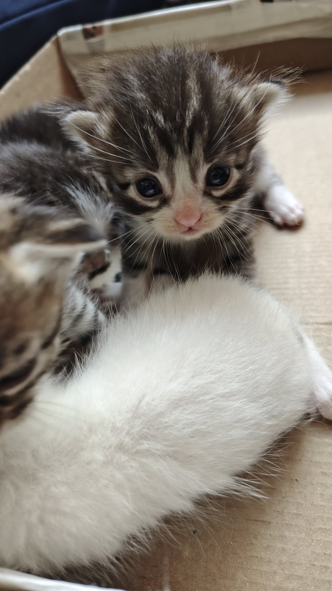
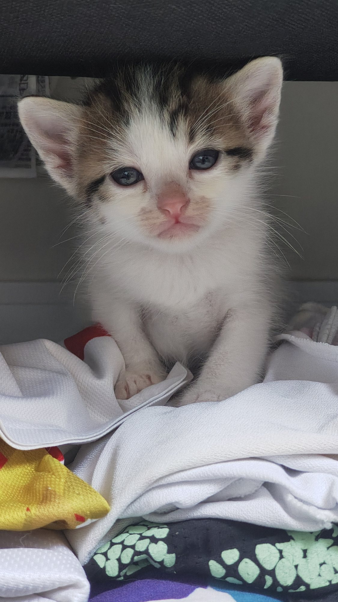
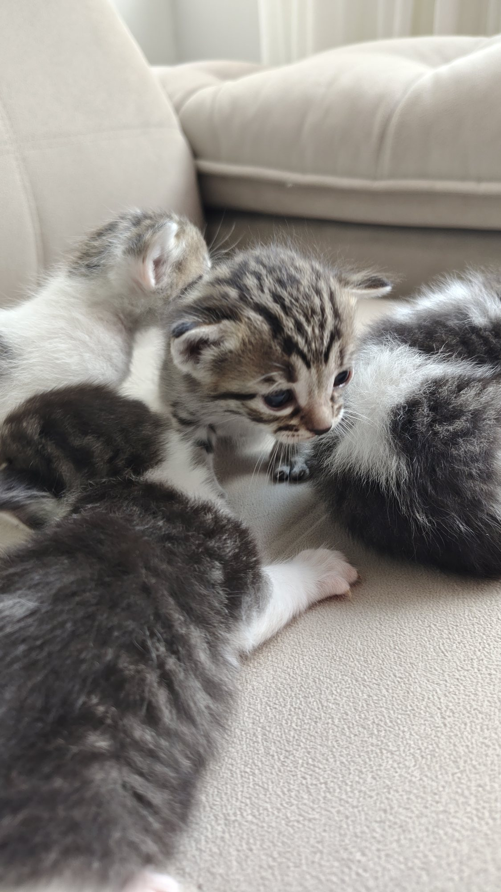
Ela é carinhosa, protetora e tem uma natureza tranquila. Seus tutores contam que nunca deu trabalho e que já está passando seus bons hábitos aos pequenos.
A mamãe já está ensinando a usar a caixa de areia e a afiar as garrinhas no tapete certo. Ela mesma nunca afiou no sofá.
Os filhotes já dão sinais de que herdaram a calma da mãe. Cada um tem seu encanto, e todos merecem uma família paciente e amorosa.
São seis filhotes no total. Ainda não sabemos quantos são machos ou fêmeas. Reunimos aqui todas as 13 fotos da ninhada para você conhecer cada momento.
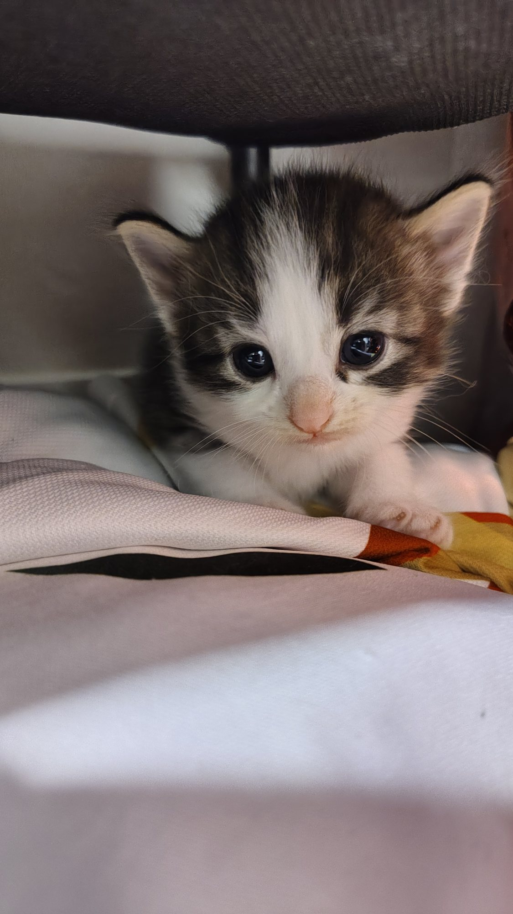
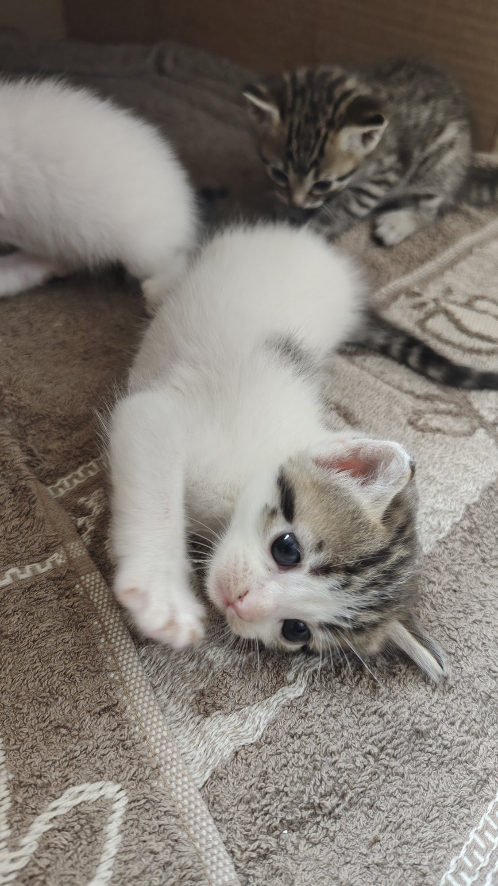
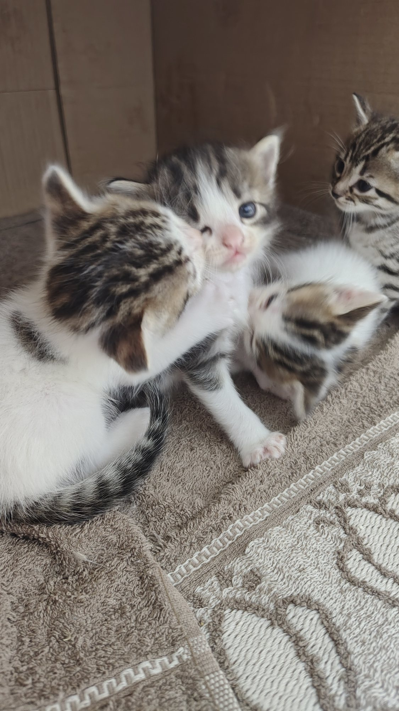
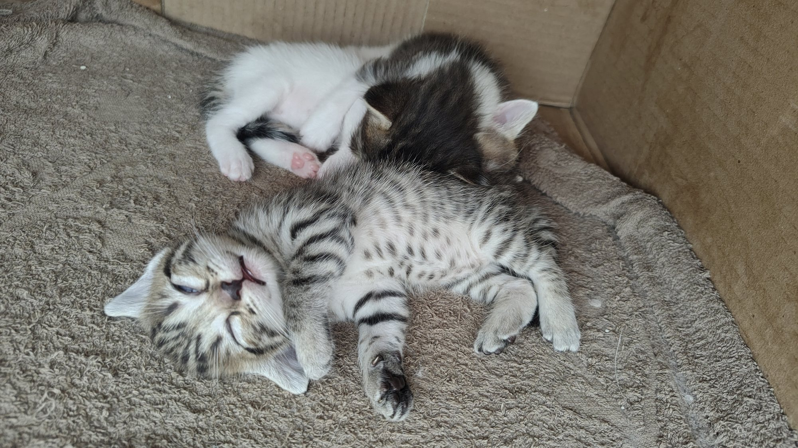
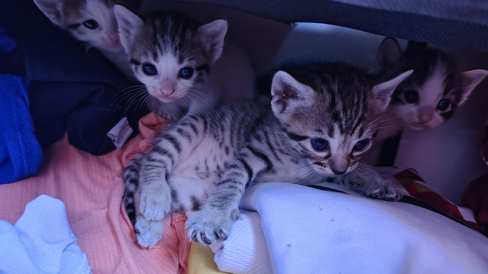
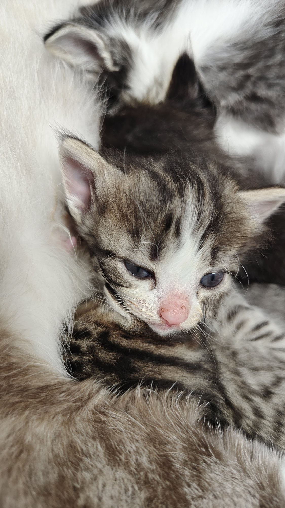
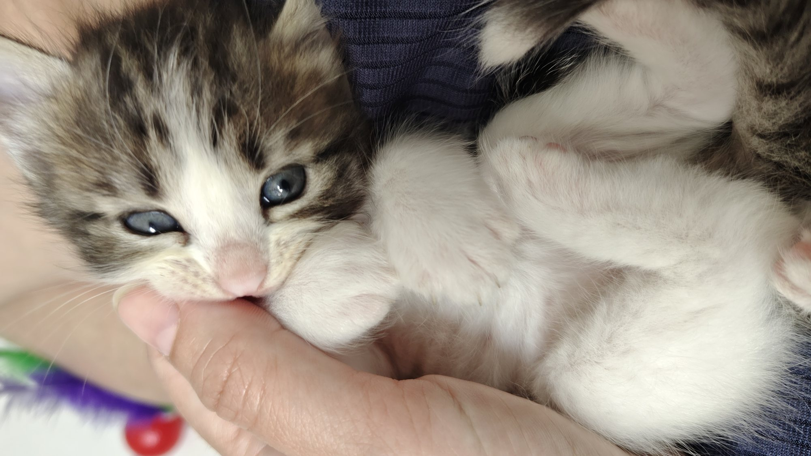
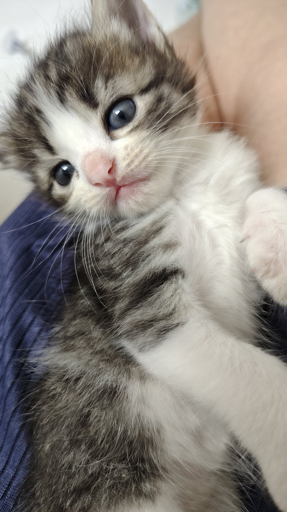
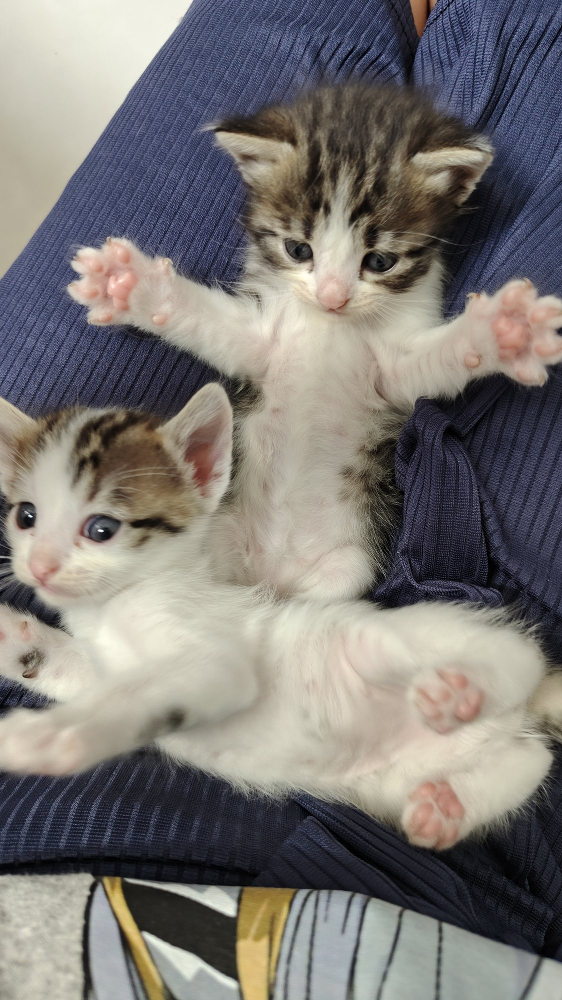
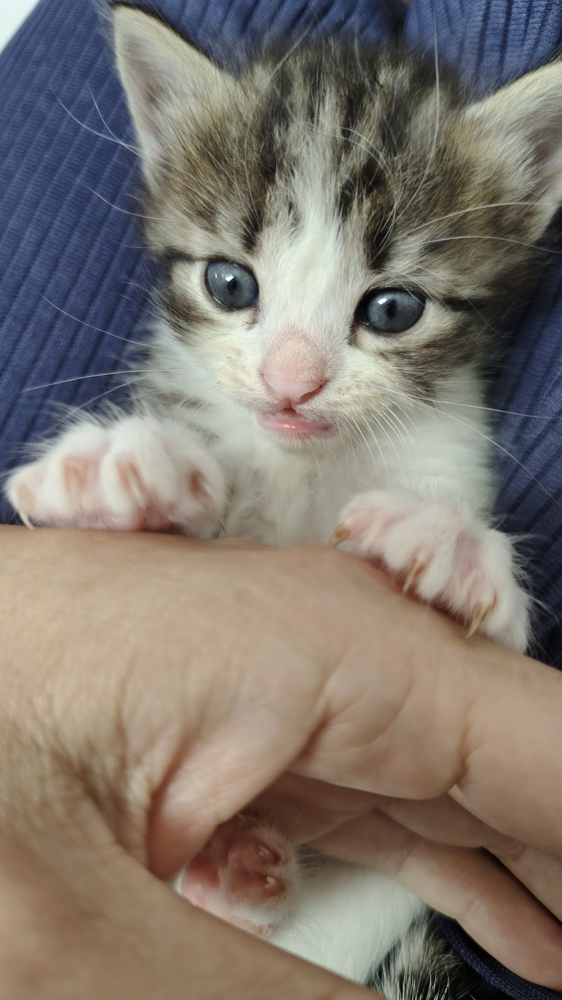
13 fotos reais da ninhada • Toque em uma foto para ampliar • Registros de outubro e novembro de 2026
Eles têm 30 dias em 09/11/2026 e ainda estão com a mãe. Converse conosco sobre o momento adequado para a adoção após o desmame.
Todos procurando um lar responsável, com carinho e cuidado.
Já receberam vermífugo, conforme informado pelos tutores.
Estão aprendendo os primeiros hábitos com ela. Sexo dos filhotes ainda não identificado.
Se você quer saber mais sobre os filhotes ou conversar sobre adoção responsável, mande uma mensagem. A entrega será combinada para depois do desmame.
Preparamos cinco cards para você postar, enviar nos grupos e ajudar os pequenos a encontrar suas famílias.